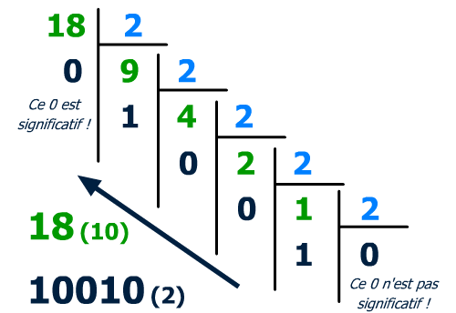
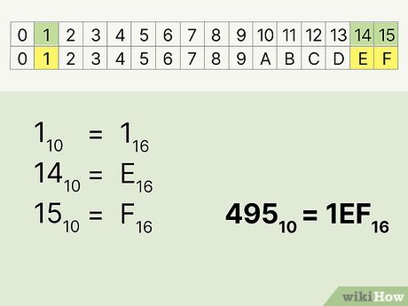
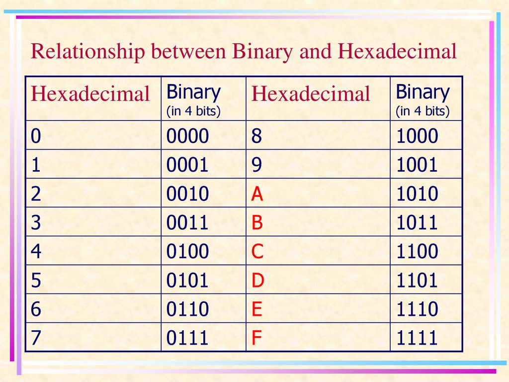
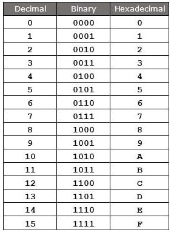
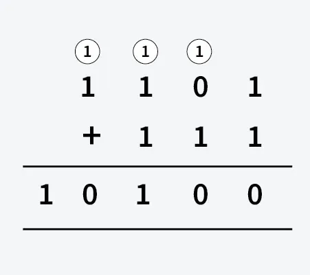
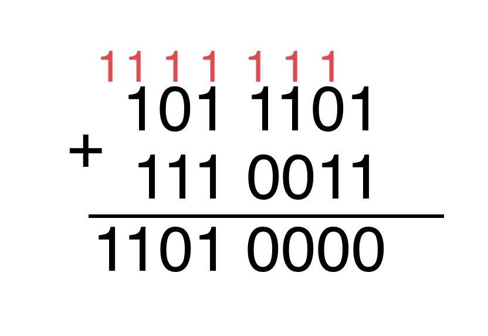
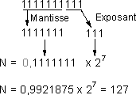

Python (bases)
ÉcritureBinaire : 0b1011
Hexa : 0x1A
Conversion
bin(11) → 0b1011
hex(26) → 0x1a

Vous etes actuellement dans la page 'Cours'
En informatique, les ordinateurs fonctionnent avec un système de numération qui n'utilise que deux symboles : 0 et 1. Ces symboles sont appelés des bits (pour binary digit). Un bit représente un état binaire, comme "allumé" ou "éteint" dans un circuit électrique. C'est la base de tout traitement, calcul et représentation de l'information dans une machine.
Pour comprendre la valeur d'un nombre binaire, il faut le convertir en système décimal (notre système de base 10). La méthode consiste à multiplier chaque bit par une puissance de 2 croissante, en commençant par le bit le plus à droite, puis à additionner les résultats. Le bit le plus à droite est associé à 2⁰, le suivant à 2¹, et ainsi de suite.
La conversion inverse se fait par la méthode des divisions successives par 2. On divise le nombre décimal par 2 et on note le reste (qui sera toujours 0 ou 1). On continue de diviser le quotient obtenu par 2, en notant à chaque fois le reste, jusqu'à ce que le quotient soit 0. Le nombre binaire est formé par l'ensemble des restes, lus de bas en haut.

Le système hexadécimal (ou "hex") est un système de numération en base 16. Contrairement à notre système décimal (base 10) qui utilise 10 chiffres (0-9), l'hexadécimal en utilise 16 : les chiffres de 0 à 9, et les lettres de A à F pour représenter les valeurs de 10 à 15. Son atout principal est la compacité. Un seul chiffre hexadécimal peut représenter exactement quatre chiffres binaires (bits), ce qui rend les longues séquences de bits beaucoup plus simples à lire et à écrire. C'est pourquoi on le trouve partout en informatique : pour les codes de couleurs (ex : #FF5733), les adresses mémoire, ou pour représenter des données brutes.
Pour convertir un nombre hexadécimal en décimal, il faut multiplier chaque chiffre par une puissance de 16, en partant de la droite. Le chiffre le plus à droite est multiplié par 160, le suivant par 161, etc.
Pour convertir un nombre décimal en hexadécimal, on utilise la méthode des divisions successives par 16. On note le reste de chaque division jusqu'à ce que le quotient soit 0. On lit ensuite les restes de bas en haut pour obtenir le nombre hexadécimal.

Cette conversion est très directe. Chaque chiffre hexadécimal est converti en son équivalent binaire sur quatre bits.
Pour passer du binaire à l'hexadécimal, il faut d'abord regrouper les bits par paquets de quatre, en partant de la droite. Si le dernier paquet à gauche n'a pas quatre bits, on ajoute des zéros en tête. Ensuite, chaque paquet est converti en son chiffre hexadécimal équivalent.

Entier à convertir :
Convertir en :
Résultat :



